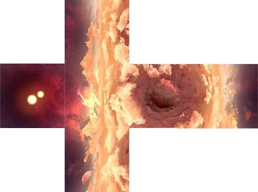
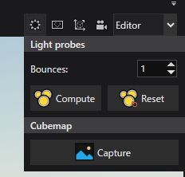
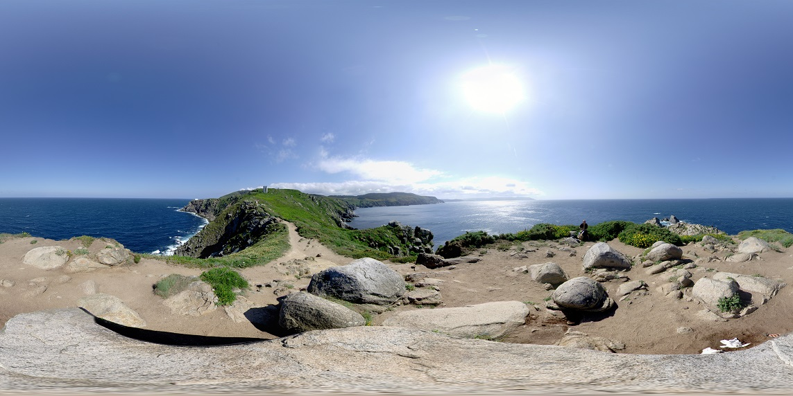
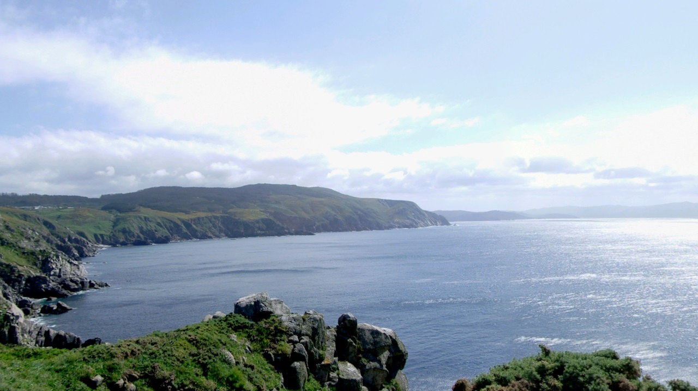
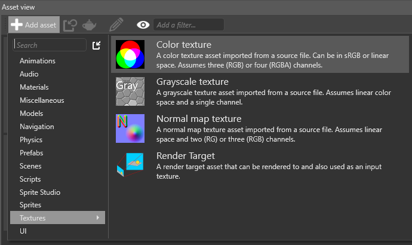
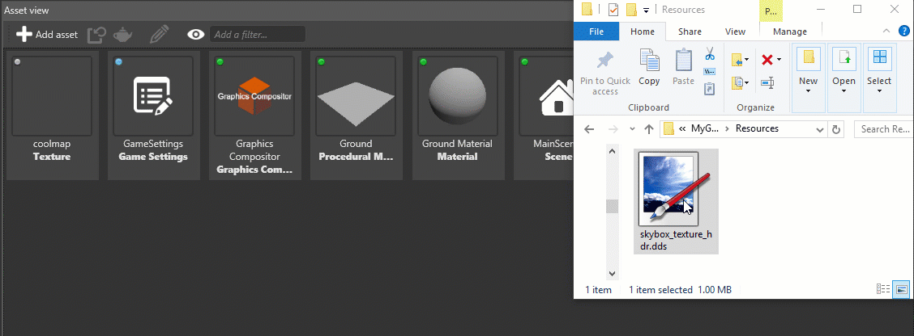
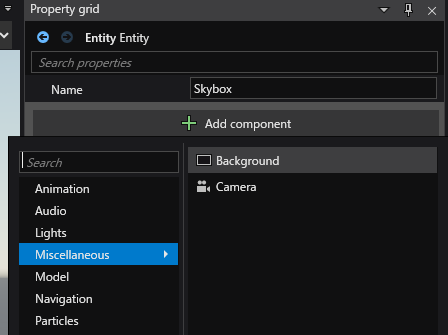
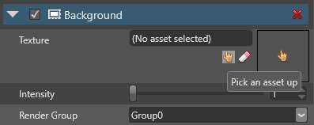
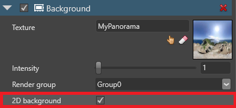

スカイボックスと背景
初級 デザイナー プログラマー
スカイボックス（Skybox） とは、空間や距離を感じさせる背景のことです。典型的なスカイボックスの背景には、空、雲、山、その他の風景があります。スカイボックスは事前にレンダリング済みの画像であるため、GPU や CPU の使用量が少なくて済みます。
スカイボックスとして、キューブマップ や 360°パノラマテクスチャー を使用することができます。また、シーンの照明に使用することも可能です。
Note
今のところ、Stride はスカイドームやローカルスカイボックスはサポートしていません。
また、2D ゲームでよく使われる 2D 背景 を表示することもできます。
キューブマップ
キューブマップ（Cubemap） は、六面体のテクスチャーです。これらのテクスチャーをシーンの周りに立方体として組み立てれば、キューブマップは広々とした 3D 環境をシミュレートします。


今のところ、Game Studio で画像ファイルをキューブマップ（.dds ファイル）に変換することはできません。以下のような別のアプリケーションを使用して、個別の画像ファイルからキューブマップを作成してください。
Game Studio でキューブマップを作る
シーン内の任意の位置からキューブマップをキャプチャーすることができます。
シーンエディターで、キューブマップを撮影したい場所にカメラを配置します。カメラの向きは問題ではなく、位置だけが重要です。
一般的には、最高の全方位ビューを作成するために、シーンの中心でキューブマップをキャプチャーします。
シーンエディターのツールバーで、[Light probes and cubumaps] をクリックします。

Cubemap の下にある [Capture] をクリックします。
キューブマップを保存する場所を参照し、ファイル名を指定して [保存] をクリックします。
Tip
キューブマップは、プロジェクトの Resources フォルダに保存することをお勧めします。詳しくはバージョン管理でファイルを編成するをご覧ください。
Game Studio は、指定した場所にキューブマップファイル（.dds）を作成します。
360° パノラマテクスチャー
キューブマップを使用する代わりに、360°パノラマテクスチャー を 3D 背景として使用することができます。
| 360° パノラマ | ゲームでの見た目 |----------------|------------- |  |  画像提供： Texturify
Note
ポストエフェクトは、スカイボックスの外観にも影響を与えることを覚えておいてください。思ったようにならない場合は、ポストエフェクトの設定を変更してみてください。
キューブマップまたは 360° パノラマテクスチャーをプロジェクトに追加する
他の色のテクスチャーと同じように追加していきます。
アセットビューで、
 をクリックし、[Texture] > [Color] を選択してファイルを参照します。
をクリックし、[Texture] > [Color] を選択してファイルを参照します。
または、Windows エクスプローラーからアセットビューにファイルをドラッグ＆ドロップして、[Color] を選択します。

スカイボックスを作る
スカイボックスを作成するには、キューブマップまたは360°パノラマのテクスチャーを 背景（Background）コンポーネント に追加します。
Stride では、プロジェクトに背景コンポーネントを持つエンティティが最初から含まれています。シーン内で同時にアクティブにできる背景は 1 つだけです。複数の背景がある場合、Stride は最初の背景のみを読込みます。
必要な数のエンティティに背景コンポーネントを追加することができます。例えば、実行時にスカイボックスを切り替えたい場合などに、複数の背景を含めることができます。
背景エンティティを追加する
シーンビューで、背景コンポーネントを追加したいエンティティを選択します。
これは空のエンティティでも構いません。また、シーン内での位置は重要ではありません。
プロパティグリッドで、[Add component] をクリックし、[Miscellaneous] > [Background] を選択します。

Texture で、 スカイボックスに使用したいキューブマップまたは360°パノラマテクスチャーを選択します。

スカイボックスを光源として使う
スカイボックスを使ってシーンを照らすこともできます。Stride は、スカイボックスのテクスチャーを解析し、イメージベースドライティングを使ってライトを生成します。詳しくは、スカイボックス ライトを参照してください。
スカイボックスを実行時に変更する
次のコードは、バックグラウンドでキューブマップを変更します。
public Texture cubemapTexture;
public void ChangeBackgroundParameters()
{
// エンティティから背景コンポーネントを取得
// Get the background component from an entity
var background = directionalLight.Get<BackgroundComponent>();
// 背景を置き換え
// Replace the existing background
background.Texture = cubemapTexture;
// 背景色の強さを変更
// Change the background intensity
background.Intensity = 1.5f;
}
キューブマップからパノラマへの変換ならびに逆変換
パノラマをキューブマップに変換したり逆変換したりするための、様々なツールが存在します。
2D 背景を設定する
3D スカイボックスを使用する代わりに、テクスチャーを静的な背景として表示することができます。テクスチャーは、カメラをどのように動かしても静止したままのフラットな画像として表示されます。これは 2D ゲームでよく使われます。
そのためには、背景（Background） コンポーネントのプロパティで、2D background を選択します。

キューブマップでこれを行った場合は、Stride はキューブマップの最初の面を背景として使用します。
ビデオをスカイボックスとして使う
詳細については、ビデオをスカイボックスとして使用を参照してください。